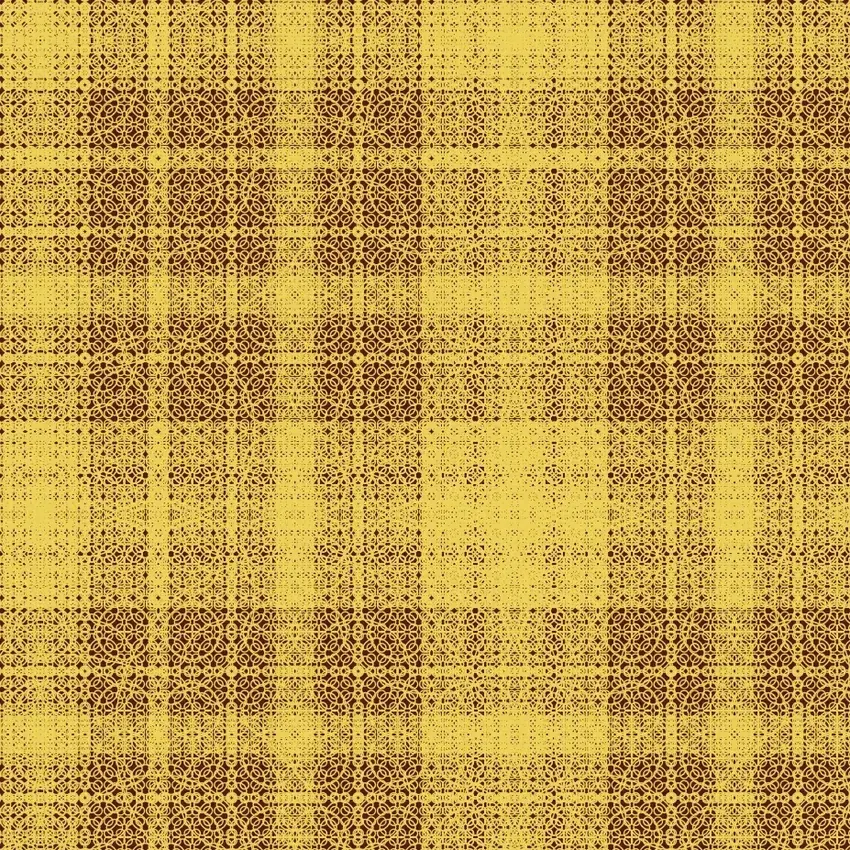
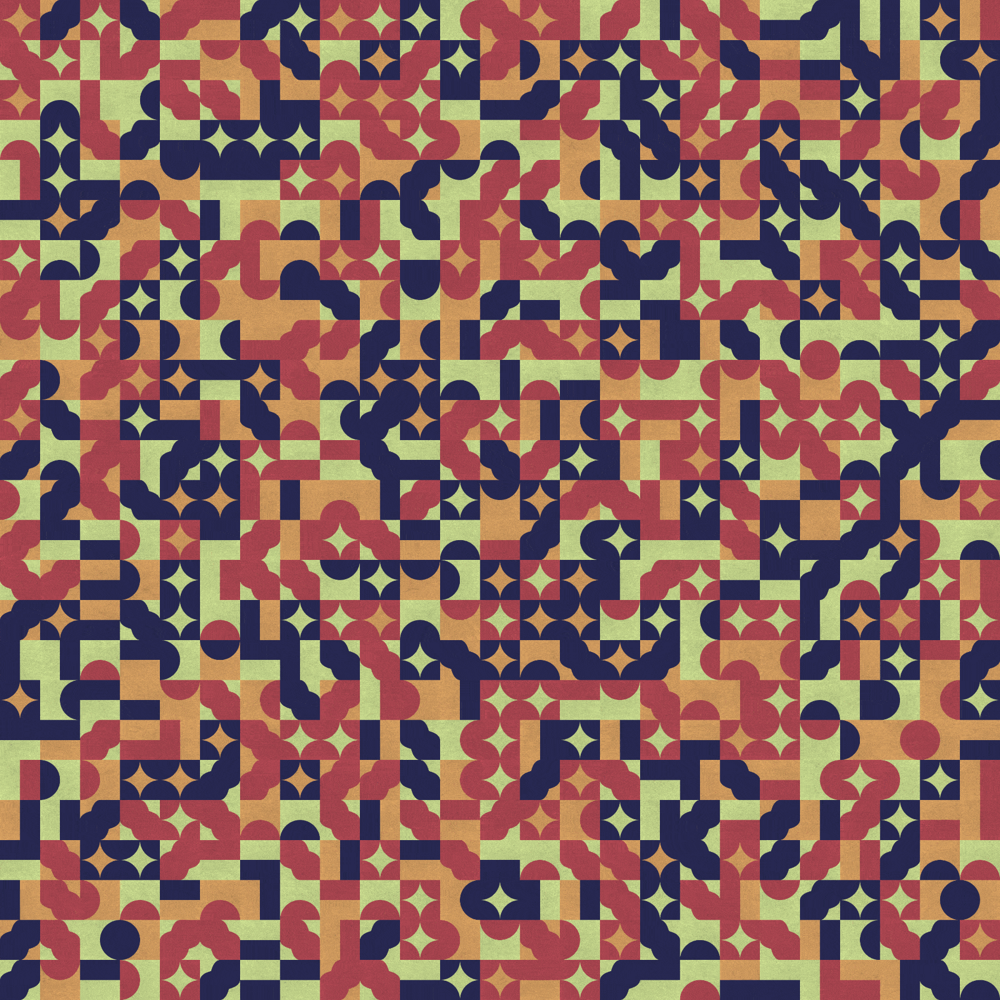
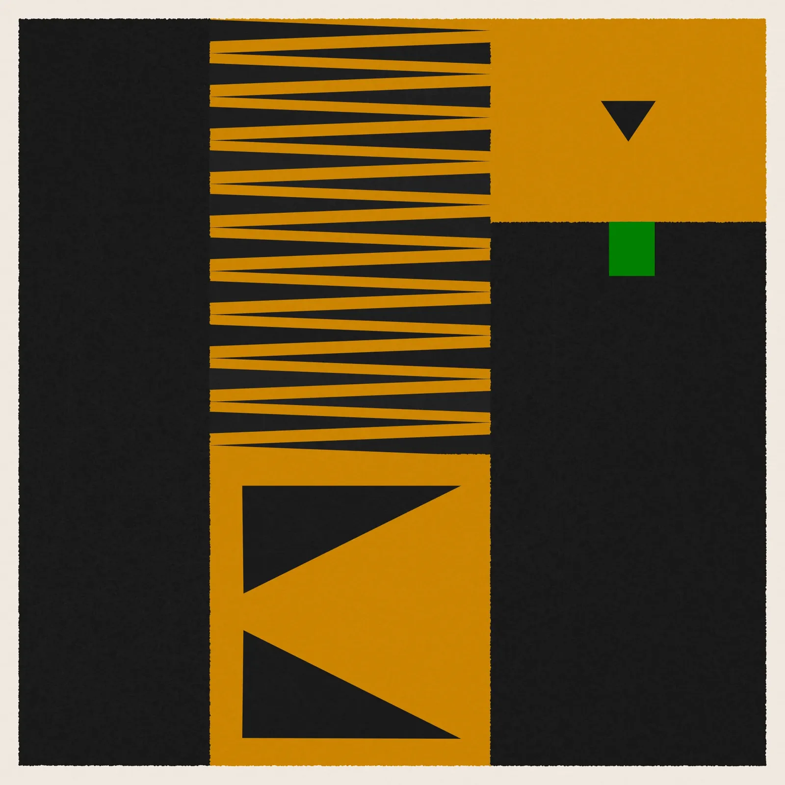
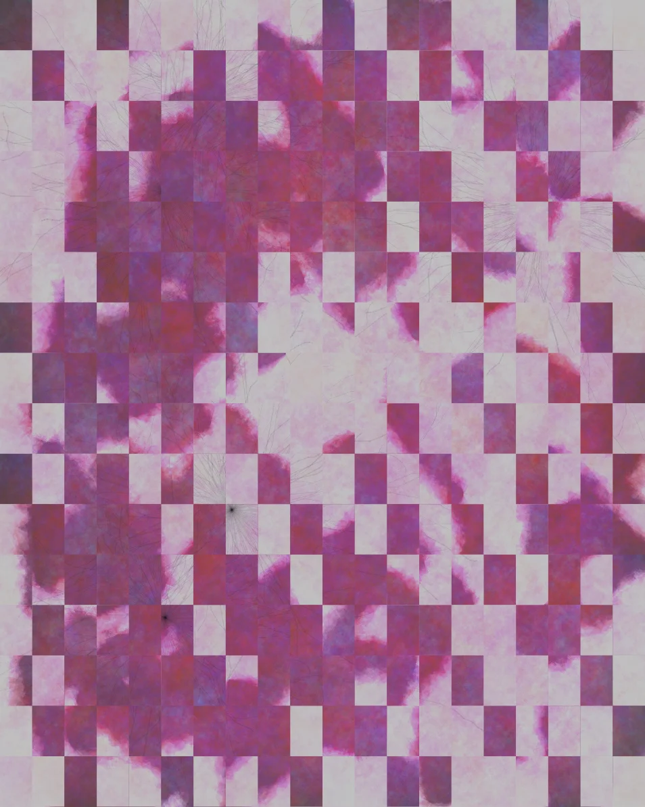
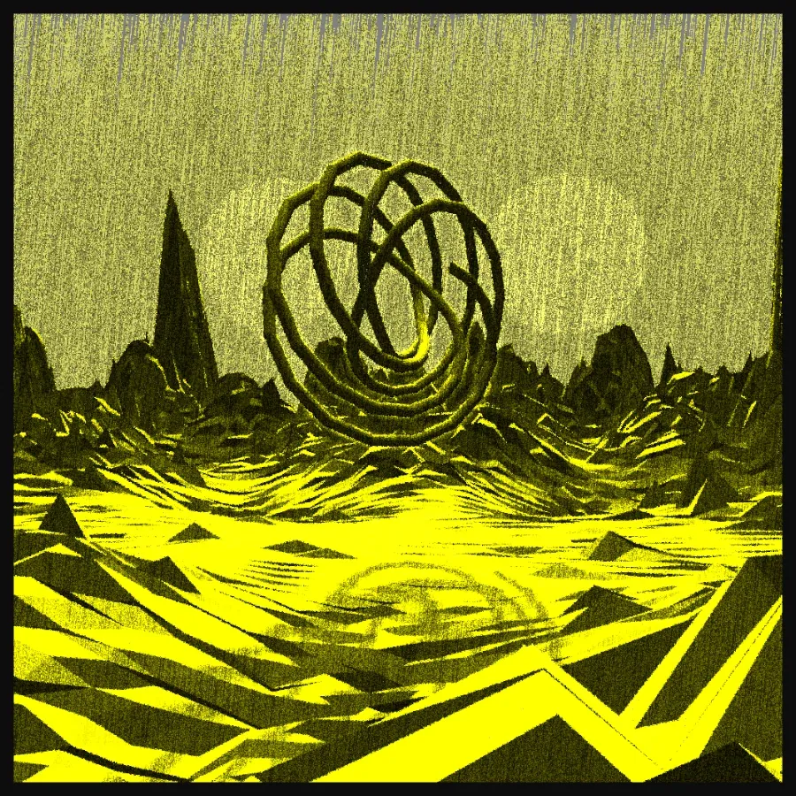

Etsy
Visit the shop
Akira Ishi — Prints & Editions
The main shop: archival giclée prints of the generative series, printed to order on heavyweight fine art paper, signed and numbered where the edition calls for it.
- Made to order
- Ships worldwide
- Signed editions
- Secure Etsy checkout

PrintFour Seasons
View in shop →Jardin Algorithmique
View in shop →Aodach
View in shop →
PrintDeconstructed Pumpkin
View in shop →
PrintSonge d'un soir
View in shop →
PrintTechnosignatures
View in shop →A selection — the full catalogue lives in the shop.